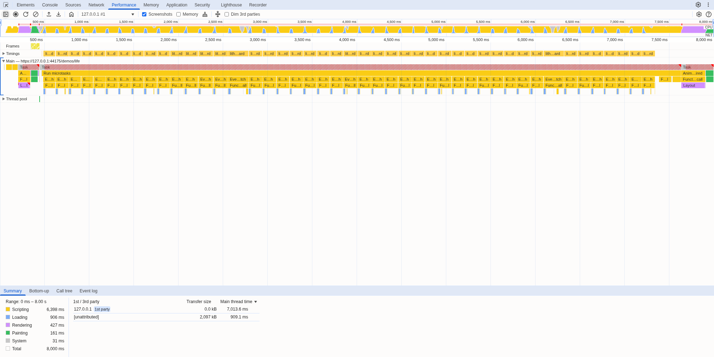
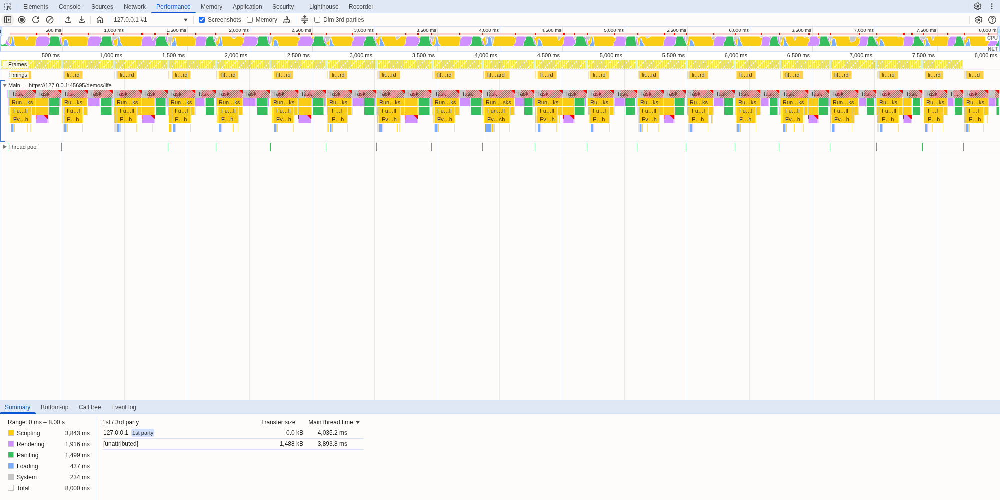
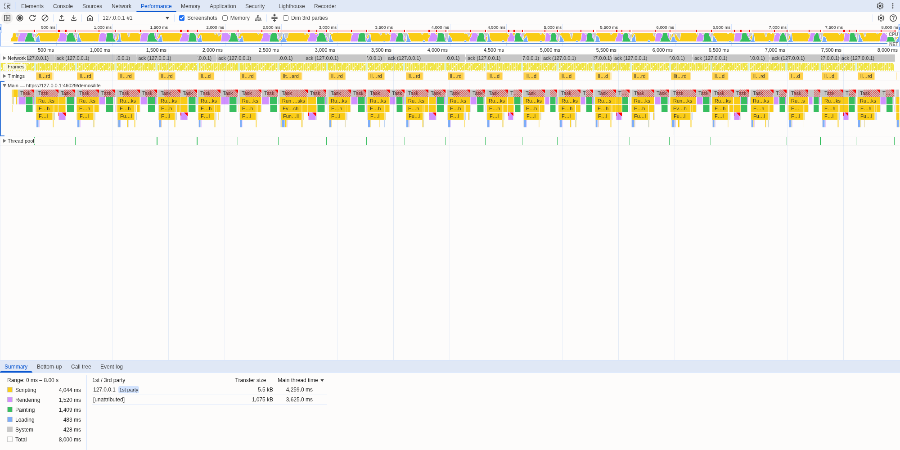
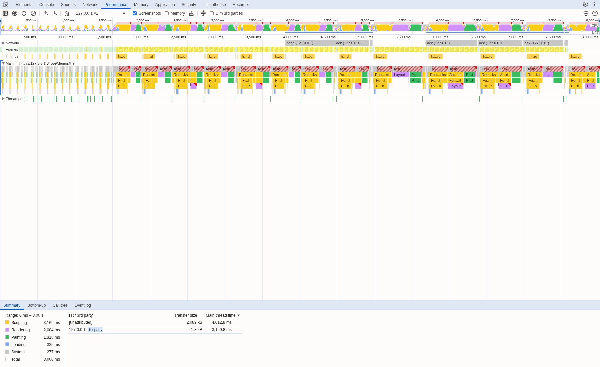
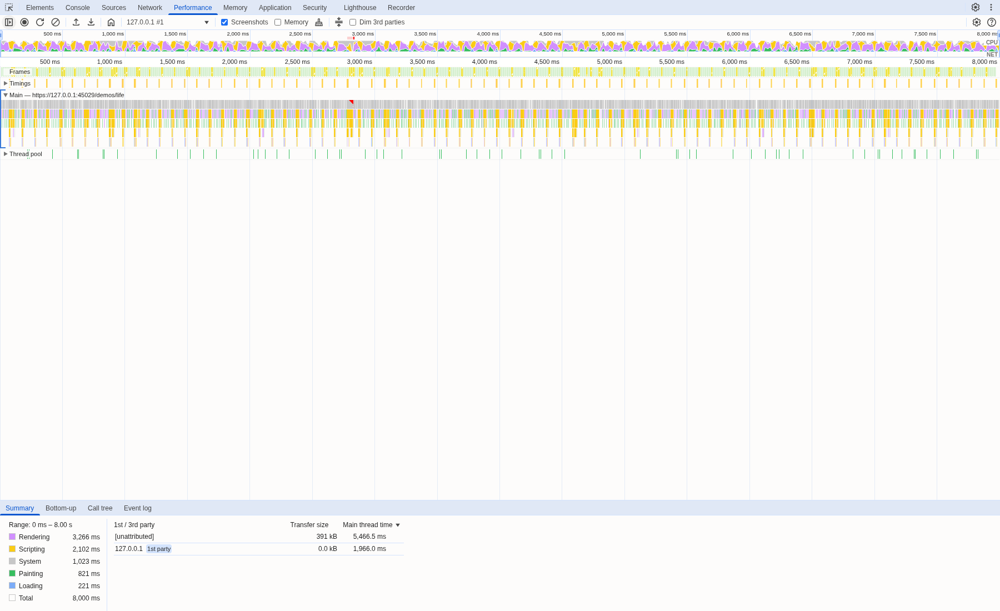

Usage
The data-newest-frame attribute watches the patch events of one SSE stream. A page that keeps up applies every frame as it comes. A page that falls behind applies only the newest frame of each view among those that arrived together, and tells you when it skips most of them.
Basic syntax
data-newest-frame[:stream-id][__reopen]- Stream: the element whose
@getopened the stream,#streamby default. Name another id after the colon:data-newest-frame:feed. HTML lowercases attribute names, so the id has to be lowercase. - Where: put it on
<body>, or on any element that lives as long as the stream. It listens onwindow, so its place in the page does not matter. __reopen: when the page falls behind, also set$_slowand open the stream again, so the server can send a slower one. See below.
<body data-newest-frame>
<div id="stream" data-init="@get('/stream')"></div>
<div id="board">...</div>
</body>Why a page falls behind
A server that streams ten frames a second never waits for the page: the browser and the kernel take minutes of frames before a write blocks. A page whose main thread needs more than 100 ms per frame falls behind, and the server cannot tell.
- Chromium then hands the page up to 2 MiB of the stream at each read. Datastar parses the chunk and applies every frame in it inside one task, with no paint in between: seconds of frozen page, showing a board that is already old when it appears.
- Firefox keeps the frames in its parent process and hands the page one per task. It keeps painting, but every frame it paints is older than the last.
Which patches it drops
A datastar-patch-elements event is a frame of a view when it replaces that view wholly. Of the frames of one view that arrive together, only the newest is applied; the others are dropped. Everything else keeps its place in the order and is never dropped.
Frames of a view
- Mode
outer(the default) orreplace, when every top-level element has an id. The sorted ids name the view. - The same, with a
selectorof that one id. - Mode
innerwith a#idselector.
Never dropped
- Signal patches
append,prepend,before,after,remove- Elements without an id, other selectors
- Patches with a
<script>or a view transition
When it applies a batch
Datastar dispatches every event of a chunk at once and reads the next chunk after a microtask, so the plugin holds the events of a chunk and passes them on in one batch at the end of it. It waits for the next animation frame when it passed a batch on less than a frame before, and after each batch it waits half as long as that batch took to apply. A page that keeps up gets each frame at once; a page that is behind paints between batches, and Firefox's frames gather during the wait. The pause counts only the time to apply the batch: the layout and paint that the applied frame causes run in it, so on a very slow phone the main thread stays busy, but it paints every frame it applies (profile).
The newest-frame-behind event
When more than half of the frames of the last 3 seconds were skipped, at least 10 frames, the plugin dispatches newest-frame-behind on the stream's element. It bubbles, and the counts start over, so a page that stays behind gets one about every 3 seconds.
evt.detail.id: the stream's idevt.detail.frames: frames (element patches) that arrived in the spanevt.detail.skipped: how many of them were skippedevt.detail.span: the milliseconds the counts cover, 2,700 to 3,000evt.detail.reopen: whether__reopenis set
<body data-newest-frame data-on:newest-frame-behind="$behind = evt.detail.skipped + ' of ' + evt.detail.frames + ' frames skipped'">Asking for a slower stream with __reopen
With __reopen, the first time the page falls behind the plugin sets $_slow to true and replaces the stream's element with a copy of itself. Its data-init runs again and opens the stream at the same URL, so Datastar aborts the old request; send a header while $_slow is set and the server can answer with fewer frames. It asks once, and never when $_slow is already true, for example because the page measured a slow link as it started.
<body data-signals:_slow="false" data-newest-frame__reopen>
<div id="stream" data-init="@get('/stream', {headers: $_slow ? {'Save-Data': 'on'} : {}})"></div>
</body>This is how lith uses it: its template and its site load the plugin with __reopen, and a stream whose request carries Save-Data: on sends each view at most four times a second.
Requirements
Datastar 1.0, with an import map that maps datastar and comes before every module script; Firefox ignores an import map that comes later. The plugin reads the datastar-fetch events that Datastar dispatches for every SSE event (their type, el and argsRaw), which Datastar 1.0.x does not document; its own virtual-scroll example dispatches them the same way.
Live demo: a Game of Life at ten frames a second
A stream sends a generation of the board every 100 ms. The slider makes each frame cost more to apply: after Datastar applies one, the page busy-waits that long, the handicap the Firefox measurements below used. Above 100 ms the page cannot keep up. Run both and compare how far behind the board the page falls, with and without the plugin.
Waiting for the stream's Service Worker.
Seconds behind the board during each run
- Without the plugin
- With the plugin
| Without | With | |
|---|---|---|
| Frames applied | ||
| Frames painted | ||
| Frames skipped | ||
| Longest time without a paint | ||
| Behind at the end | ||
| Behind at most |
Reading the demo
- Behind is how long ago the board passed the generation the page shows.
- Without the plugin the page freezes for longer and longer near the end of a run, while it applies every frame of a read in one task. With it, the page paints between batches and stays within a few frames.
- Both runs share this tab's main thread, so they run one after the other, on the same boards.
Measured in lith
The plugin started in lith, a Go framework for live Datastar pages. These runs used lith's Game of Life demo, which steps ten times a second, in headless Chromium and Firefox on Linux, on 15 and 16 October 2026. Behind is how long ago the board passed the generation the page shows.
- Without the plugin
- With the plugin
Two minutes per run with DevTools' CPU throttling, Caddy in front with TLS and HTTP/2. At 1× the page applied all ten frames a second with or without the plugin. At 15× and 30× the plugin, with __reopen, asked lith for a slower stream after 3.3 and 4.1 seconds; lith then sends each view at most every 250 ms. Without the plugin, the page at 30× painted once every 14 seconds.
Firefox, and Chromium with the same handicap
- Without the plugin
- With the newest-frame rule
Firefox has no CPU throttling, so a script busy-waited a fixed time after each frame Datastar applied, as the live demo above does. A frame then took that cost plus about 6 ms in Firefox and 8.5 ms in Chromium; 80 ms is about 9× CPU in the DevTools runs, 150 ms about 17×, 300 ms about 34×. Chromium got the same handicap:
| Cost a frame | Firefox | Chromium | ||
|---|---|---|---|---|
| without | with | without | with | |
| 0 ms | 0 s | 0 s | 0 s | 0 s |
| 80 ms | 2.8 s | 0.14 s | 0.11 s | 0.02 s |
| 150 ms | 46 s | 0.65 s | 42 s | 0.28 s |
| 300 ms | 77 s | 0.86 s | 75 s | 0.77 s |
These runs applied the newest-frame rule from a page script that held the frames until the next animation frame; the plugin applies the same rule and adds the pause after each batch. Where the page skipped most frames (Firefox at 150 and 300 ms, Chromium at 300 ms), it also switched to lith's slower stream, after 1.7 to 2.8 seconds. lith's v0.3.0 release measured the plugin itself: at 300 ms a frame, Chromium 154 and Firefox 158 both stayed within 0.8 s, and at 15× CPU Chromium stayed 0.68 s behind at the median, 1.08 s at most, against 42.6 s without it. At 0 ms both engines applied every frame (1,211 of 1,211 in Firefox, 1,210 of 1,210 in Chromium).
In a Chrome profile
Traces of lith's Game of Life, recorded on 16 October 2026 with CDP tracing in headless Chromium 154, its CPU slowed 15 times, behind Caddy over HTTP/2, and opened in Chromium's own DevTools Performance panel. Both screenshots cover the same 8 seconds. The yellow Timings row holds marks the test page adds: one lith:apply board per frame applied.




__reopen. One frame per task, then a rendering task (purple and green) and a paint, about two a second. The Frames row along the top is full. The page is still 97% busy: half of it applies frames, and the other half lays out and paints them (paint 40%, the demo's sparkline 25%, layout 24%), which fills the pause the plugin leaves after each batch.Trace numbers, and Cache-Control
| 20 s trace, 15× CPU | Longest task | Frames a task | Bytes a read | Paints | Longest gap |
|---|---|---|---|---|---|
| Without the plugin | 7.2 s | 45 | 2 MiB | 2 | 7.6 s |
| With the plugin | 0.52 s | 1 | 186 KB | 44 | 0.75 s |
With __reopen | 0.45 s | 1 | 93 KB | 44 | 0.70 s |
| 1× CPU, with the plugin | 0.05 s | 1 | 47 KB | 1,067 | 0.07 s |
At full speed the trace with the plugin looks like the one without it (1,067 paints in 20 seconds against 1,053): the plugin applies every frame as it arrives. With Cache-Control: no-cache or none instead of no-store on the stream, Chromium sends it through its HTTP cache and two or three 2 MiB reads can land in one task, so the longest freeze without the plugin grew to 14.6 seconds. The lag stayed the same in Chromium and Firefox, over HTTP/2 and HTTP/1.1. Send no-store.
Pacing on the server instead
The server cannot see a slow page in its own writes, but it can if the page tells it. For comparison, lith got a prototype of that: each frame ends with an element whose data-init posts an acknowledgement, and the server keeps at most W frames unacknowledged per stream. When an acknowledgement arrives it sends the view's newest frame, so the frames in between never leave the server.
At W=1 this is long polling: each acknowledgement asks for the next frame, so the page gets at most one frame per round trip plus the time to apply it. It differs from ordinary polling in that nothing goes out while the view does not change, the frame arrives over the open SSE stream rather than as the response to the acknowledgement, and the server always sends the newest state. A larger W works like TCP's sliding window: more frames in flight hide the round trip, and the server notices a slow page later. For a page that keeps up, plain push needs no requests and has no round-trip cap, which is why pacing pays off only while a page is behind.
<i id="ack-42" data-init="@post('/ack?tab=…&n=42', {requestCancellation: 'disabled'})"></i>

ack request per frame.Measured: a slow phone on a fast link, a fast phone on a far link
A slow phone on a fast link. 15× CPU, Caddy over HTTP/2, 150 seconds, the median of three runs:
| Configuration | Behind, median | at most | Frames/s | Server sent | Requests/s |
|---|---|---|---|---|---|
| No plugin | 27 s | 50 s | 6.9 | 7.2 KB/s | 0 |
| Plugin | 0.32 s | 0.94 s | 2.6 | 7.1 KB/s | 0 |
Plugin, __reopen | 0.64 s | 1.16 s | 2.8 | 3.2 KB/s | 0 |
| Server, W=1 | 0.46 s | 1.16 s | 2.7 | 2.1 KB/s | 2.7 |
| Server, W=2 | 0.57 s | 1.21 s | 3.7 | 2.7 KB/s | 3.7 |
| Server, W=1, ack after paint | 0.33 s | 0.70 s | 2.5 | 1.9 KB/s | 2.5 |
Frames/s is how many frames the page applied a second; the stream sends ten. Without the plugin the page applies 6.9 a second but paints only every 7 seconds. "Ack after paint" posts from requestAnimationFrame instead of right after the morph.
A fast phone on a far link. No CPU slowdown, a proxy adding the round trip, 90 seconds, frames the page applied a second:
| Configuration | 100 ms round trip | 300 ms round trip |
|---|---|---|
| No plugin | 10.1 | 10.1 |
Plugin, __reopen | 10.1 | 10.1 |
| Server, W=1 | 7.1 | 2.9 |
| Server, W=2 | 10.1 | 5.8 |
Pacing only a page that is behind
The two combine. Stream normally with the plugin on the page, and when it fires newest-frame-behind, ask the server once to pace that stream. The server stops pacing when every acknowledgement has come back within a tick for 5 seconds.
<body data-newest-frame
data-on:newest-frame-behind="@post('/pace?tab=' + $_tab, {requestCancellation: 'disabled'})">Put the listener on <body>, not on the stream's element: a request from that element aborts its own stream.


newest-frame-behind, and the Network track shows the pace request and one ack per frame after it. From then on each read holds a single frame.Measured: pacing only after the event
| Measured 17 October | Behind, median | at most | Server sent | Acks/s | 300 ms round trip, fast phone |
|---|---|---|---|---|---|
| Plugin | 0.28 s | 1.03 s | 7.0 KB/s | 0 | 10.1 fps |
Plugin, __reopen | 0.62 s | 1.21 s | 3.4 KB/s | 0 | 10.1 fps |
| Server, W=1, ack after paint | 0.31 s | 0.72 s | 1.9 KB/s | 2.5 | 2.8 fps |
| Plugin, then server pacing | 0.34 s | 0.70 s | 2.2 KB/s | 2.4 | 10.1 fps, never paced |
15× CPU, 150 seconds, the median of three runs; the last column is one run each. The page asked for pacing 2.2 seconds in. On a page slow for 60 seconds and then fast, pacing ended 5 to 6 seconds after the CPU sped up and the page went back to ten frames a second; with __reopen it stays on the slow stream. In an in-process load test of 1,000 streams with a tenth of them slow, pacing every stream took 9,205 acknowledgements a second and 2.9 times the CPU; pacing only the slow ones took 250 a second, within the plugin's range.
Which to use
| Slow phone, fast link behind, sent | Key press at 15× | Slow phone, 300 ms behind, fps | Fast phone, 300 ms fps | Around 6× behind, painted | Slow, then fast | 1,000 viewers requests, CPU | |
|---|---|---|---|---|---|---|---|
| No fix | poor27 s7.2 KB/s | poor2,970 ms | poor26 s7.1 applied | good10.1 | good0.10 s6.5 painted | fairrecovers7 s after | good0150% |
| Plugin | good0.28 s7.0 KB/s | fair142 ms | good0.47 s2.7 fps | good10.1 | good0.06 s7.9 painted | goodat once | good0150% |
Plugin, __reopen |
fair0.62 s3.4 KB/s | fair132 ms | fair0.80 s2.8 fps | good10.1 | poor0.37 s4.0 painted | poorstays at 4 fps | good0155% |
| Server pacing, every stream | good0.31 s1.9 KB/s | fair118 ms | fair0.55 s1.45 fps | poor2.8 | good0.10 s6.8 painted | fairrecovers10 acks/s | poor9,205439% |
| Plugin, then server pacing | good0.34 s2.2 KB/s | fair118 ms | fair0.60 s1.45 fps | good10.1never paced | good0.09 s6.7 painted | goodreleased 6 s afterfar link: with ReleaseSlack | good250156% |
| Cheaper frameone SVG path | good0.00 s13 KB/s | not measured | not measured | not measured | not measured | not measured | not measured |
Measured on 16 and 17 October 2026 in lith's TestLifeDrift: headless Chromium 154 on one Linux machine (Intel i5-13500), DevTools' CPU throttling standing in for a slow phone, Caddy over HTTP/2, three runs each. Slow phone: 15× CPU. Key press: median time to the page's handler, one every 500 ms. Slow, then fast: 15× for 60 seconds, then full speed. 1,000 viewers: an in-process load test with a tenth of the pages slow; CPU in percent of one core. Ratings compare the rows within a column.
- Start with a cheap frame. Fewer elements is what counts (Demo 5).
- The plugin alone costs nothing while a page keeps up, never did worse than no fix, and was closest to the stream for a slow phone on a far link.
- Leave
__reopenoff for pages that are only a little too slow. Its four frames a second made a page at 6× worse than no fix, and it never switches back. - Pacing on the server sends the fewest bytes to a slow page, but caps every page at about one frame per round trip and costs a request per frame. Turned on only after
newest-frame-behind, fast pages never pay for it. On a far link, its switch back needs the round trip the page reports. - No fix keeps the page from answering. A key press waited 3 seconds at the median at 15×; with any fix, about 120 to 140 ms. The fixes stop the freeze, but rendering every frame still keeps a phone this slow busy.
The server-side pacing is a prototype in lith's hybrid branch, not part of a release.
Cheaper frames first
A frame the page can apply in time needs no fix at all. The same Game of Life board, 80 by 50 cells, in four markups, measured on 17 October 2026 in headless Chromium 154 at 15× CPU behind Caddy over HTTP/2, without the plugin, 150 seconds, the median of three runs:
| Markup | Elements | HTML | On the wire | Behind, median | Falls behind from |
|---|---|---|---|---|---|
| Cells | 4,077 | 46.5 KB | 709 B | 28.7 s | 10× |
| Lean cells | 4,027 | 20.6 KB | 1,756 B | 14.2 s | 12× |
| One SVG path | 34 | 8.7 KB | 1,304 B | 0.00 s | not within 120× |
| Canvas, signal patch | 26 | 5.2 KB | 802 B | 0.00 s | 40× |
Breaking points from 60-second runs without a fix. Lean cells drop the classes and attributes the board does not need.
- The number of elements matters, not the bytes. Halving the HTML moves the break from 10× to 12×. Going from 4,000 elements to 34 removes it.
- The morph is a third of the cost. At 15× a painted frame of cells costs about 440 ms: 130 ms morphing, 94 ms layout, 81 ms paint, and the rest parsing, Datastar's MutationObserver and the page's own sparkline.
- The plugin cannot help a frame sent as signals. It never drops signal patches, so a canvas fed by signals needs
__reopenor pacing on the server once it falls behind.


A frame that cannot shrink
Not every view fits in one path. An 80 by 24 terminal where nearly every cell changes each frame, one <span> per character, has 1,945 elements and falls behind from 15×. Merging runs of one colour into one span leaves 334 elements and moves the break to 50×.
| Terminal | No fix | Plugin, __reopen | Server pacing |
|---|---|---|---|
| A span per character, 15× | 20.3 s | 0.68 s | 0.29 s |
| A span per colour run, 50× | 3.7 s | 0.63 s | 0.37 s |
Median lag behind the stream over 150 seconds; server pacing acknowledges after the paint. Make the frame as cheap as the view allows first. The plugin, or pacing on the server, keeps a page current on the devices that are still too slow for it.